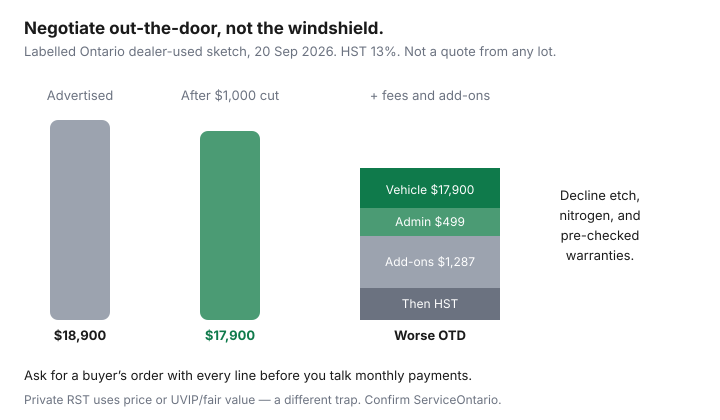

Transportation · Canada
How to negotiate a used car price in Canada without falling for add-on traps
The purchase price you fought for is not the price you pay. Canadian used-car desks rebuild the deal with documentation fees, etching, nitrogen, rust modules, and an extended warranty that costs more than a year of repairs. Private sellers do it with “as-is, firm” after you have already spent on a PPI. This is how to work from comps, insist on an out-the-door number, decline the usual add-ons, and walk without a speech.
Diligence first: CARFAX Canada, Ontario UVIP, PPI. Whether used beats new at all is TCO. CPO premiums: CPO vs private.
Disclosure: Auto-loan comparison tools are an offer type. Saving Optimizer may earn a commission if we later add partner links. We do not currently claim dealer or lender partnerships. This is not credit, legal, or tax advice. Extended warranties are optional products — we do not sell them and we do not tell you to buy one.
Key takeaways
- Negotiate out-the-door (price + fees + tax), not the windshield number and not the monthly payment.
- Comps: the same year/km/trim on Kijiji, AutoTrader, and dealer sites in your city — private ads are often cheaper before you add PPI, safety, and RST.
- Decline etching, nitrogen, overpriced rust “modules,” and warranties you have not compared. Silence is a yes at the desk.
- A written PPI and a lien/branding find are dollar facts. Use them before you sign.
- Walk. Another compact exists. The script is one sentence, not a monologue.
Market comps: private listings vs dealer asking prices
Pull ten listings within about 150 km: private, franchise used, and independent lots. Same generation, similar kilometres, same drivetrain. Private ads skip dealer overhead and sometimes skip a safety, a UVIP, or honesty. Dealer ads include HST in some provinces’ advertised prices and exclude it in others — read the footnote. Ontario dealer ads are usually plus HST; private RST is a different calculation (greater of price or UVIP/fair value). A $17,000 private car and a $19,500 dealer car can flip after tax, safety, and a PPI. Build a two-line sheet: all-in to plate, not asking price. City-level used-vs-dealer write-ups (for example Ontario private vs dealer explainers) are orientation, not your comp set.
Out-the-door price: tax, fees, and “doc” charges
Ask for a buyer’s order that lists:
- Vehicle price.
- Any remaining freight, PDI, or “admin” on a used car (push back; used freight is a favourite invention).
- Documentation / licensing assistance fees.
- Add-ons, each on its own line.
- Tax (HST 13% in Ontario on dealer sales; GST+PST or QST elsewhere; private RST rules differ).
- The total due and the amount you are financing if any.
If they will only talk monthly payments, they are hiding the principal. Bring a pre-approval from your own bank or credit union if you need a loan so the desk rate is optional. This is not a recommendation to borrow.
| Line | Dealer-used example | What to challenge |
|---|---|---|
| Advertised price | $18,900 | Comps and PPI |
| Admin / doc | $499 | Ask it off or into the vehicle price |
| Etch + nitrogen + module | $1,287 | Decline |
| HST 13% | On whatever you signed | OTD includes it — do not “forget” |

Add-ons to decline (etching, nitrogen, overpriced warranties)
- VIN etching / theft registration: often marked up hundreds for a service you can buy for little or skip.
- Nitrogen: air is already mostly nitrogen. A compressor at home is cheaper.
- Rust “modules” and paint sealants: ask what the written warranty actually covers on rust-through versus surface. A reputable undercoating shop you choose can be a better spend — still optional.
- Extended warranties: not automatically a scam and not automatically worth it. Get the booklet, the deductible, wear-and-tear exclusions, and a price you can shop against an independent warranty or a larger emergency fund. Never let them say the rate is “only available with protection.”
- Pre-checked boxes on a tablet: scroll. Untick. Initial only what you want.
Using PPI and history findings in negotiation
Paper on the table: UVIP branding/liens, CARFAX accident lines, PPI photos. Translate to dollars with the shop’s estimate. “The hoist shows $1,400 of brakes and tires and a rusted brake line they priced at $600. I am at $16,900 OTD before tax, or I leave.” Do not donate the PPI fee to a seller who then sells to the next person at the old price without telling you — that is the risk you accepted when you inspected. If the findings are structural, leave. If they are expected wear on a fair ad, chip a little and move on.
Financing vs cash leverage—carefully
Private sellers often prefer a bank draft. That is process, not a discount. Dealers may prefer you finance because they can earn on the loan. Cash can still win if the manager would rather close Friday. Run both: cash OTD versus financed OTD at your credit union’s rate. Do not raise the vehicle price to “buy down” a payment. Do not skip the insurance quote — a VIN in a high rate group can erase the discount; see broker vs direct.
Walk-away script that works
“I’m not the right buyer at this out-the-door number. Please take the add-ons off and email the worksheet. I’ll decide by tomorrow noon.” Then leave. Do not sit in the box for three hours. Do not deposit “to hold” while they “talk to the manager.” If they call with a real OTD cut, you can return. If they do not, you already have comps.
After-sale registration checklist so savings stick
- Insurance binder on the VIN before you drive it.
- Provincial transfer, tax, plates, safety if required. Ontario: UVIP and permit in the government order.
- Keep the bill of sale, PPI, and history PDFs.
- If you financed at the desk, shop a refinance only if the contract allows and the math works — not as a plan to undo a bad OTD.
- Book the first maintenance you just discovered on the PPI so the discount does not become neglected rust.
Sources & date stamps
- Ontario.ca used-vehicle buyer/seller pages — UVIP $20; RST on greater of price or fair/UVIP value. Reviewed 20 Sep 2026.
- Companion CPO vs private and private-sale guides — tax and PPI bands used in the sketches.
- Canadian dealer-fee and add-on patterns as consumer-education context (not a specific lot’s menu). Confirm the buyer’s order in front of you.
Frequently asked questions
What is an out-the-door price in Canada?
The number you actually pay to leave: vehicle price plus freight leftover on used if any, documentation or admin fees, add-ons you accepted, and tax (HST/GST+PST/QST). A lowered sale price that grows $1,800 at the desk is not a win. Ask for the OTD worksheet before you talk monthly payments.
Which dealer add-ons should I decline?
VIN etching, nitrogen, rust modules that duplicate what a $200 spray already did, paint protection at thousands, and extended warranties you have not priced elsewhere are the usual desk traps. Some are optional even when the form looks pre-checked. You can say no.
Does paying cash get a better used-car price?
Sometimes on a private sale. At a dealer, financing can be how they get reserve or a rate-mark-up, so cash can be a small lever or none. Do not finance a worse OTD to chase a “we can only do that price if you use our lender” line without running the math. This is not credit advice.
How do I use a PPI in negotiation?
Email the written findings and ask for a dollar-for-dollar cut or repairs at a named shop before you sign. Structural rust and airbag faults are walks. Expected wear (brakes, tires) is a smaller chip. Do not renegotiate after you have signed and the add-on desk is printing.
What happens after I buy so the savings stick?
Insurance on the VIN, provincial registration and tax, a safety certificate where required, and a refusal to add last-minute protection products. Then shop the loan if you borrowed. Registration checklists are provincial — Ontario UVIP buyers should not improvise at the kiosk.